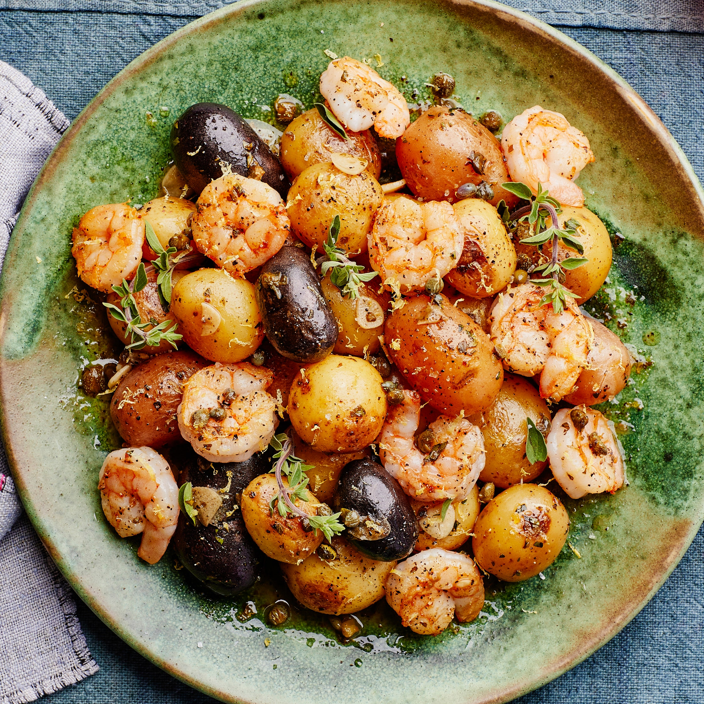

Lemon-Oregano Shrimp and Tiny Potatoes

Description
This short ingredient list features a handful of flavor powerhouses—namely garlic, oregano, capers, and lemon, which as a team can transform even the blandest proteins into a delightful meal. Here they dress quickly seared shrimp and boiled tiny potatoes to form an incredibly quick, weeknight-friendly meal. Look for peewee potatoes, which are 1½" in diameter or less and usually sold by the pound in a netted bag in the produce section.
Ingredients
- 1 lb. multicolor Peewee potatoes or other very small potatoes
- Kosher salt
- 1 lb. large shrimp, peeled, deveined
- Freshly ground pepper
- 4 Tbsp. extra-virgin olive oil, divided
- 3 garlic cloves, thinly sliced
- 3 Tbsp. drained capers
- 1 Tbsp. finely chopped oregano, plus sprigs for serving
- 3 Tbsp. unsalted butter
- Zest and juice of 1 small lemon
- Flaky sea salt
Steps
- Cook 1 lb. multicolor Peewee potatoes or other very small potatoes in a medium pot of boiling salted water until fork-tender, 10-12 minutes. Drain and set aside.
- Pat dry 1 lb. large shrimp, peeled, deveined, with paper towels; season with kosher salt and freshly ground pepper. Heat 3 Tbsp. extra-virgin olive oil in a large skillet over medium-high. Arrange shrimp in an even layer and cook, undisturbed, until golden brown underneath, about 2 minutes. Toss and continue cooking, tossing occasionally, until opaque, about 1 minute more. Using a slotted spoon, transfer shrimp to a plate.
- Heat remaining 1 Tbsp. extra-virgin olive oil in same pan. Add reserved potatoes and season with kosher salt and pepper. Cook, tossing occasionally, until lightly browned in spots, about 4 minutes. Add 3 garlic cloves, thinly sliced, 3 Tbsp. drained capers, and 1 Tbsp. finely chopped oregano and cook, stirring occasionally, until garlic is softened and mixture is fragrant, about 2 minutes. Add 3 Tbsp. unsalted butter and cook, tossing occasionally, until almost completely melted, then return shrimp to pan. Add juice of 1 small lemon, season with kosher salt, and toss to combine.
- Transfer shrimp and potatoes to a platter or large shallow bowl and top with oregano sprigs, zest of 1 small lemon, flaky sea salt, and more pepper.